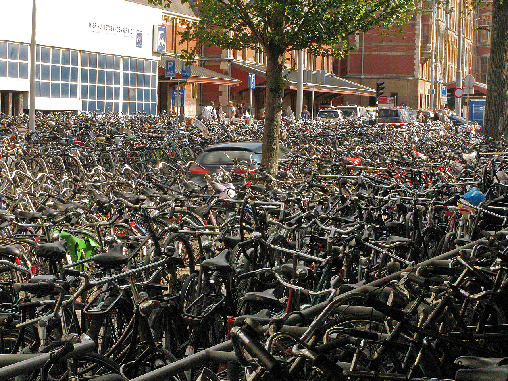
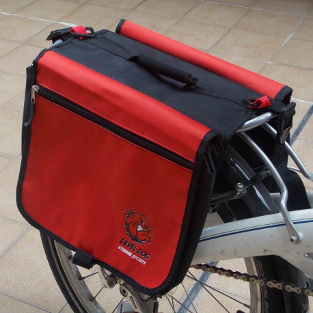

Depósitos de bicicletas

Nos piden construir un modelo cuyo objetivo es informatizar parte de la gestión de los depósitos municipales de bicicletas en Ciudad Gótica.
1. Bicis con sus accesorios
De cada bicicleta se informa: el rodado (p.ej. 26), el largo en centímetros (p.ej. 120 para una bici de 1.20 metros de largo), la marca (p.ej. "Legnano"), y los accesorios. Estos últimos (los accesorios) aportan distintas características a la bici en la que se instalan.
A partir de estos datos, debe poder obtenerse la siguiente información referida a una bici:
- altura: se calcula como
rodado * 2.5 + 15.
- velocidad de crucero: si la bici tiene más de 120 cm, entonces se calcula como
rodado + 6, si no, como rodado + 2.
- carga: es la suma de la carga que puede llevar cada accesorio.
- peso: es la suma de
rodado / 2 más el peso total de los accesorios.
- tieneLuz: es verdadero si al menos uno de los accesorios es luminoso.
Se deben contemplar los siguientes accesorios
- Farolito: pesa 0.5 kg, no lleva carga (o sea, lleva 0 kg de carga), es luminoso.
- Canasto: de cada canasto se informa el volumen. El peso se calcula como
volumen / 10, la carga como volumen * 2. No es luminoso.
- Morral de bici: para cada uno se informa el largo (en centímetros), y si tiene ojo de gato o no. El peso es fijo, 1.2 kg. La carga se calcula como
largo / 3. Es luminoso si tiene ojo de gato.
Agregar un método para consultar la cantidad de accesorios livianos de una bici, o sea, la cantidad de accesorios cuyo peso es menor a 1 kg.
Para que tengan una idea y por las dudas, va una foto de un morral para bici.

Van tres ejemplos de bicis.
- una bici rodado 28, de 150 cm de largo, marca Olmo, como único accesorio tiene un farolito.
Para esta bici tenemos: altura 85, velocidad de crucero 34, carga 0, peso 14.5 (14 de la bici + 0.5 del farolito), tiene luz (por el farolito), tiene 1 accesorio liviano.
- una bici rodado 26, largo 110 cm, marca "Legnano", accesorios: un farolito, un canasto con volunen 8, un morral de largo 21 con ojo de gato.
Para esta bici tenemos: altura 80, velocidad de crucero 28, peso 15.5 (13 de la bici, 0.5 del farolito, 0.8 del canasto, 1.2 del morral), carga 23 (16 del canasto más 7 del morral), tiene luz (porque el morral tiene ojo de gato), 2 accesorios livianos (el farolito y el canasto).
- una bici rodado 20, largo 90 cm, marca "Legnano", como único accesorio un morral de largo 6 y sin ojo de gato.
Para esta bici tenemos: altura 65, velocidad de crucero 22, carga 2, peso 11.2 (10 de la bici + 1.2 del morral), no tiene luz, no tiene ningún accesorio liviano.
2. Depósito
Agregar al modelo los depósitos donde se guardan las bicis. Para cada depósito, se indica la colección de bicis que están ahí.
Agregar métodos para consultar, dado un depósito:
- la colección de sus bicis rápidas. Una bici se considera rápida si su velocidad de crucero es mayor a 25.
- la colección formada por la marca de cada una de las bicis, sin repetidos.
- si el depósito es nocturno o no. La condición es que todas sus bicis tengan luz.
- si tiene bicicleta para llevar una carga expresada en kg. La condición es que para al menos una de las bicis del depósito, la carga que puede llevar sea mayor a los kilos que se piden.
Por ejemplo, para un depósito que tiene las tres bicis descriptas en el punto anterior, tenemos:
- las bicis rápidas son las dos primeras (la rodado 28 y la rodado 26).
- las marcas son "Olmo" y "Legnano".
- el depósito no es nocturno (por la tercera bici).
- sí tiene bici para llevar 10 kilos, no tiene bici para llevar 50 kilos.
Un depósito que tenga solamente las dos primeras bicis, sí es nocturno.
3. Más sobre el depósito
Agregar métodos para poder consultar, dado un depósito
- la marca de la bici más rápida.
- la carga total de las bicis largas, que se calcula como la suma de la carga que pueden llevar las bicis cuyo largo es de más de 170 cm.
- la cantidad de bicis sin accesorios que hay en el depósito.
4. Bicis compañeras
Se dice que dos bicis son compañeras si: son de la misma marca, y además sus largos no difieren en más de 10 cm.
Se pide agregar lo necesario para poder consultar, dado un depósito, cuáles de sus bicis son compañeras de una bici que se pasa por parámetro.